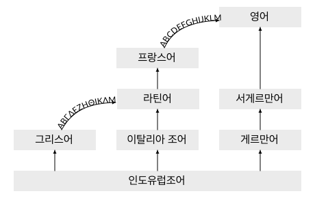

라틴어와 다른 언어와의 관계¶
그리스어와의 관계¶
라틴어는 중세 이후 유럽에서 정치, 종교, 학술, 상업 등에서 1000년 넘게 유렵에서 국제어로 사용되었지만, 로마의 발전기에 지중해 국가들의 국제어는 그리스어였다.
그렇기 때문에 로마 문화의 많은 부분은 그리스의 영향을 받았다. 라틴어 어휘와 문법 역시 그리스어의 영향을 크게 받았다. 기독교의 경우도 로마 시기 주로 사용한 언어와 경전은 그리스어였다.
라틴어 사전에 없는 단어가 외래어로 사용한 그리스어인 경우도 있다.
그래서 라틴어를 이해하는 데 그리스어에 대한 지식이 필요하다고 볼 수도 있다. 일부 학교 커리큘럼에서는 라틴어와 그리스어 강좌를 동시에 진행하기도 한다.
그리스어는 시대와 지역에 따라 많은 차이가 있는데, 고전 라틴어에 영향을 미친 것은 고대 그리스어와 코이네 그리스어이다.
라틴어를 공용어로 사용하려고 하는 노력은 오히려 국력이 약해진 서로마 말기에 이루어졌다. 디오클레티아누스 황제(제위 284~305)의 개혁은 라틴어를 공식 언어로 강제하였고, 이어 콘스탄티누스 황제(제위 306~337)가 기독교를 공인하면서 카톨릭의 공식 언어도 라틴어가 되었다.
반면 동로마는 주로 그리스어가 사용되는 지역이었으며, 그리스어가 표준적인 언어로 사용된다. 동로마에서 라틴어를 공식 언어로 사용하고 또한 모국어로 사용한 마지막 황제는 유스티누스 황제(제위 518~527)로 추정한다. [Chris Wickham, The Inheritance of Rome: A History of Europe from 400 to 1000, 2009, 90쪽. 위키백과 재인용]
헤라클리우스(그리스어 이라클리오스) 황제(제위 610~641)의 개혁에는 그리스어를 공용어로 사용하는 것이 포함되어 있다. 이 역시 동로마의 국력이 약해진 시기이다. 동방 정교회도 그리스어를 공식 언어로 사용한다.
그래서 중세 이후 그리스어를 로마어로 부르기도 한다.
중세 문헌의 Graecum est; non legitur(그리스어라서 읽을 수 없다. non potest legi라고 적은 것도 있는데, 영어 중역인 것으로 생각된다.)라는 것도 있다. 필경사들이 라틴어 밖에 모르기 때문에 그리스어나 다른 언어가 나오면 필사를 할 수 없다는 뜻이다. 이것이 영어 표현으로도 남게 되었다. [https://en.wikipedia.org/w/index.php?title=Greek_to_me&oldid=853495972]
주석
동로마의 정식 명칭은 물론 로마 제국이다. 동로마와 비잔티움 제국은 후대 역사가들이 시대 구분을 위해 만든 말이다.
우리에게도 서주(西周)/동주(東周), 서한(西漢)/동한(東漢)과 같은 용례가 있으므로 여기서는 동로마로 부르기로 하겠다.
영어 학습과의 관계¶
고전 라틴어 학습과 현대 영어 학습은 전혀 무관한 관계이지만, 사회적으로 영어 학습에 대한 압박이 강하기 때문에 이 둘의 관계를 언급할 필요가 있다.
결론부터 말하면, 라틴어 학습으로 영어 학습에 도움을 받는다는 것은 기대하기 힘들다.
물론 영어는 직간접적으로 라틴어의 영향을 매우 많이 받은 언어이지만, 매우 동떨어져 있는 언어이기 때문이다. 심지어 라틴어와 매우 가깝다는 로망스 제어의 경우도 학습하기 위해 라틴어를 배워야 할 필요성은 거의 제로에 가깝다. 로망스어를 전공하는 경우도 일반적으로 다른 로망스어를 배우는 것을 라틴어를 배우는 것보다 우선하는 경우가 많다.
또한 20세기 중반까지만 하더라도 영미권 고등교육에서 라틴어가 차지하는 비중이 꽤 높았으나, 20세기 후반부터 영어가 사실상 국제어로 자리잡게 되면서 라틴어를 꼭 배워야 할 필요성이 현저히 줄어들게 되었다.
다만 현재도 북미와 유럽의 일부 학교 교육에서 전통적으로 라틴어를 중시하므로 유학을 준비하는 경우 목표하는 학교에 따라서 기초적인 라틴어 학습이 도움이 될 수도 있을 것이다. 그러나 이 역시 부차적인 요소일 것이다.
일반적으로 라틴어 학습이 영어 학습에 미치는 긍정적인 영향으로는 단어의 어원을 알게된다는 점을 드는 경우가 많은데, 물론 그 뜻을 알게 된다는 것은 좋지만 굳이 뜻을 알기 위해 라틴어의 변화까지 배울 필요는 없을 것이다. 영어의 접두어 정도로 이해해도 충분한 경우가 많다. 한자를 쓰지 못하더라도, 한자의 의미를 파악하는 것만으로 한국어를 쓰고 익히는데 도움을 받는 것과 마찬가지라고 본다.
또, 영어는 우리말처럼 한자 단어 같은 것을 조합하여 쉽게 단어를 생성하는 언어가 아니다. 어떤 라틴어 어원을 안다고 해서 신조어를 만드는 경우가 아니고서는 그 단어로 새로운 단어를 조합해내기가 힘들다.
그리고 라틴어에서도 조금 어려운 단어는 그리스어에서 유래한 경우가 많다. 즉 어휘로만 보면 영어에서 그리스어 어원이 차지하는 비중이 더 높을 수도 있다. 그러나 이러한 이유로 그리스어를 배우라고 권하는 경우는 찾기 힘들다.
영어 학습을 위해 영어에 더욱 직접적인 영향을 미친 프랑스어나 비슷한 계통의 언어인 독일어를 배울 것을 권하는 사람도 없다. 영어에서 라틴어 학습 필요성을 제기하는 것은 중세 이후 서구 사회의 문화 풍습을 이해하지 못하고 이것을 언어 학습의 수단으로 착각하기 때문이다.
영어와 라틴어의 유사성은 의외의 심층적인 구조에서 찾을 수 있다. 첫째로는 라틴어에서 유래하지 않은 영어의 단어가 라틴어와 동일한 용례로 사용되는 경우가 많다.
가령 work라는 명사가 라틴어 opus와 의미가 전반적으로 흡사하다. 이 경우 work라는 명사는 철자는 다르지만 라틴어 명사 opus에서 그 의미를 대다수 차용하여 사용한 경우에 해당한다. [한동일, 카르페 라틴어, 67쪽]
위 인용문에서 언급된 work는 게르만 조어에서 유래한 단어로, 라틴어와는 무관하다. 또, 영어 사전에 등재되어 있지만 잘 쓰이지 않는 의미가, 라틴어에서 사용하는 의미인 경우도 있다.
이러한 유사성은 문법에서도 나타난다. 예를 들어 영어에서 전치사 of를 쓰는 경우는 라틴어 속격에서 유래한 경우가 있고, 영어의 of가 가지고 있는 여러 의미가 라틴어 속격과 겹치기도 한다. 라틴어에서 여격을 쓰는 구문은 영어에서 for로, 라틴어에서 탈격을 쓰는 구문은 영어에서 from을 쓰는 것으로 나타나기도 한다.(물론 모든 경우가 그런 것은 아니다. 또한 게르만어에서 유래한 경우도 있다.)
또한 종속절에 대한 접근 방법 같은 것도, 영어에는 라틴어와 같은 접속법 동사가 따로 없지만 마치 접속법 동사인 것처럼 다루어지는 경우가 많다.
한편 이러한 영어와 라틴어의 심층적인 유사성은 영어로 쓰여진 라틴어 번역을 이해하기 어렵게 할 수도 있다. 예를 들어 상기 예처럼 라틴어 opus를 설명하는 데는 영어 work 한 단어로 충분하지만, 한국어 화자는 work의 의미를 다시 찾아봐야 하기 때문이다.
영어 어휘에 미친 영향¶
일반적으로 현대 영어 어휘의 60에서 80% 정도가 라틴어 어원인 것으로 알려져 있다.
하지만 이를 단순하게 평가할 수는 없다. 예를 들어 한국어에 한자어나 일본식 조어 가 다수를 차지하지만, 이런 어휘들의 사용빈도가 높지 않은 것과 마찬가지다.
또한, 영어 어휘에 수입된 라틴어 어휘도 그리스어 어원인 경우가 절반 가까이인 것으로 추측하며, 프랑스어(노르만어)를 거쳐서 간접적으로 수입된 것도 상당량이다.
영어 어휘의 라틴어 도입은 다음과 같이 여러차례에 걸쳐서 일어났다.
(1) 기원전부터 게르만족이 로마 제국과 교류하면서 라틴어 어휘를 받아들이는데, 이때 수입된 어휘가 현대 영어에도 남아 있다. (mint(동전), wine 등)
(2) 서기 596년 교황 그레고리오 1세가 아우구스티누스를 브리타니아 섬에 선교사로 파견한 것을 기점으로 많은 종교 관련 라틴어 어휘가 수입된다. (altar, minister, priest 등)
또한 이 시기부터 룬 문자가 라틴어 라틴어 알파벳으로 대체되기 시작하였다.
(3) 1066년 노르만 정복 이후 오일어 계통의 노르만어를 사용하게 되었다. 모두 로망스어로 라틴어 어휘가 많았다.
또한 영어로 편입된 어휘 이외에도, 중세 이후 라틴어가 종교, 학술, 법률, 외교 언어로 사용되었기 때문에 지식인들은 라틴어에 대한 이해도가 높았다.
독일어와의 관계¶
독일어는 로망스어에 비해 라틴어와 거리가 멀다. 그러나 독일어 역시 어휘와 문법에서 라틴어의 영향을 대단히 많이 받았다. 그 정도가 심해서 현대 독일어 문법의 일부는 라틴어에 대한 반동으로 생겼을 정도이다.
독일어를 언급해야 하는 또하나의 이유는 19세기 근대 학문이 독일 중심으로 발전하면서, 독일어로 쓰여진 라틴어 문법서가 현재까지 중요하게 다루어지고 있기 때문이다.
주요 저서로는 퀴너(Raphael Kühner, 1802~1878)의 『Ausführliche Grammatik der lateinischen Sprache』, Manu Leumann(1889~1977)과 호프만(Johann Baptist Hofmann, 1886~1954)의 『Lateinische Grammatik』 등이 있다.
이 책에서도 독일어 문법 용어가 자주 언급된다. 이것은 독일어를 통해 라틴어 문법이 개념화된 경우가 많기 때문이다.